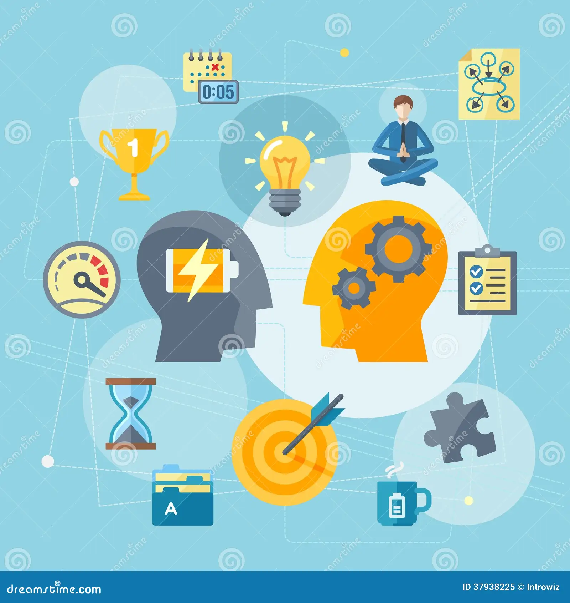

Explorando novas tecnologias
Estou sempre em busa de novas tecnologis para exploar
e aprender. Recentimente,tenho me interessado por
inteligência artificial e machine learning. Essas áreas
estão crescendo repidamente e oferecem muitas opotunidades
interessante. Mal posso esperar para comparilharminhas descobertas
com vocês!
Autor: Giuliana Santiago
Data: 11 Nov 2025

Dicas para melhorar a produtividade
Neste post, quero compartilhar algumas dicas que me ajudaram
a melhorar a minha produtividade no dia a dia. Organizar meu tempo,
definir metas claras, evitar distrações e ultilizar estratégias de
organização ajudaram muito. Espero que essas dicas também possam ser
úteis para você.
Autor: Giuliana Santiago
Data: 12 Nov 2025

A importância de Aprender a programar
Hoje eu vou falar sobre a importância de Aprender
a programar. A programação é ua habilidade valiosa que pode abrir muitas
portas no mercado de trabalho e ajudar a desenvolver o pensamento
lógico e a criatividade.
Recomendo a todos que considerem aprender a programar, independente
da área de atuação.
Autor: Giuliana Santiago
Data: 11 Nov 2025
.jpg)